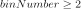
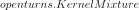
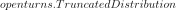

KernelSmoothing¶
-
class
KernelSmoothing(*args)¶ Non parametric continuous distribution estimation by kernel smoothing.
Refer to Kernel smoothing.
- Parameters
- kernel
Distribution, optional Univariate distribution of the kernel that will be used. By default, the standard Normal distribution is used.
- binedbool, optional
Activates bining mecanism only in the univariate or bivariate cases. It allows to speed up the manipulation of the density function of the resulting distribution. By default, the mecanism is activated.
- binNumberint,

, optional Indicates the number of bins used by the bining mecanism. By default, OpenTURNS uses the values stored in the ResourceMap.
- boundaryCorrectionbool, optional
Activates the boundary correction using the mirroring technique. By default, the correction is not provided.
- kernel
Notes
The binning mecanism creates a regular grid of binNumber intervals in each dimension, then the unit weight of each point is linearly affected to the vertices of the bin containing the point. See [wand1994] for the details.
The boundary correction is available only in one dimension, and it is done using the mirroring technique. See the notes of the setBoundingOption method for the details.
When applied to multivariate samples, the kernel is the kernel product of the univariate distribution specified in the constructor.
Examples
Fit a distribution on data thanks to the kernel smoothing technique:
>>> import openturns as ot >>> sample = ot.Gamma(6.0, 1.0).getSample(100) >>> kernel = ot.KernelSmoothing() >>> fittedDist = kernel.build(sample)
Compare the PDFs:
>>> graph = fittedDist.drawPDF() >>> graph.add( ot.Gamma(6.0, 1.0).drawPDF()) >>> graph.setColors(['blue', 'red']) >>> graph.setLegends(['KS dist', 'Gamma'])
Methods
build(self, \*args)Fit a kernel smoothing distribution on data.
buildAsKernelMixture(self, sample, bandwidth)Fit a kernel smoothing distribution on data.
buildAsMixture(self, sample, bandwidth)Fit a kernel smoothing distribution on data.
buildAsTruncatedDistribution(self, sample, …)Fit a kernel smoothing distribution on data.
buildEstimator(self, \*args)Build the distribution and the parameter distribution.
computeMixedBandwidth(self, sample)Compute the bandwith according to a mixed rule.
computePluginBandwidth(self, sample)Compute the bandwith according to the plugin rule.
computeSilvermanBandwidth(self, sample)Compute the bandwith according to the Silverman rule.
getBandwidth(self)Accessor to the bandwith used in the kernel smoothing.
getBootstrapSize(self)Accessor to the bootstrap size.
getClassName(self)Accessor to the object’s name.
getId(self)Accessor to the object’s id.
getKernel(self)Accessor to kernel used in the kernel smoothing.
getName(self)Accessor to the object’s name.
getShadowedId(self)Accessor to the object’s shadowed id.
getVisibility(self)Accessor to the object’s visibility state.
hasName(self)Test if the object is named.
hasVisibleName(self)Test if the object has a distinguishable name.
setAutomaticLowerBound(self, automaticLowerBound)Accessor to the flag for an automatic selection of lower bound.
setAutomaticUpperBound(self, automaticUpperBound)Accessor to the flag for an automatic selection of upper bound.
setBootstrapSize(self, bootstrapSize)Accessor to the bootstrap size.
setBoundaryCorrection(self, boundaryCorrection)Accessor to the boundary correction flag.
setBoundingOption(self, boundingOption)Accessor to the boundary correction option.
setLowerBound(self, lowerBound)Accessor to the lower bound for boundary correction.
setName(self, name)Accessor to the object’s name.
setShadowedId(self, id)Accessor to the object’s shadowed id.
setUpperBound(self, upperBound)Accessor to the upper bound for boundary correction.
setVisibility(self, visible)Accessor to the object’s visibility state.
-
__init__(self, \*args)¶ Initialize self. See help(type(self)) for accurate signature.
-
build(self, \*args)¶ Fit a kernel smoothing distribution on data.
- Parameters
- sample2-d sequence of float
Data on which the distribution is fitted. Any dimension.
- bandwidth
Point, optional Contains the bandwith in each direction. If not specified, the bandwith is calculated using the mixed rule from data.
- Returns
- fittdDist
Distribution The fitted distribution.
- fittdDist
Notes
According to the dimension of the data and the specified treatments, the resulting distribution differs.
If the sample is constant, a
Diracdistribution is built.If dimension > 2 or if no treatment has been asked for, a
KernelMixtureis built by calling buildAsKernelMixture.If dimension = 1 and a boundary treatment has been asked for, a
TruncatedDistributionis built by calling buildAsTruncatedDistributionIf dimension = 1 or 2 and no boundary treatment has been asked for, but a binning treatment has been asked for,
If the sample size is greater than the bin number, then a
Mixtureis built by calling buildAsMixtureOtherwise a
KernelMixtureis built by calling buildAsKernelMixture
Examples
See the effect of the boundary correction:
>>> import openturns as ot >>> sample = ot.Exponential(1.0).getSample(1000) >>> smoother = ot.KernelSmoothing() >>> fittedDistNoCorr = smoother.build(sample) >>> smoother.setBoundaryCorrection(True) >>> fittedDistWithCorr = smoother.build(sample)
Compare the PDFs:
>>> graph = ot.Exponential(1.0).drawPDF() >>> graph.add(fittedDistNoCorr.drawPDF()) >>> graph.add(fittedDistWithCorr.drawPDF()) >>> graph.setColors(['black', 'blue', 'red']) >>> graph.setLegends(['Exp dist', 'No boundary corr', 'Boundary corr'])
-
buildAsKernelMixture(self, sample, bandwidth)¶ Fit a kernel smoothing distribution on data.
- Parameters
- sample2-d sequence of float
Data on which the distribution is fitted. Any dimension.
- bandwidth
Point, optional Contains the bandwith in each direction.
- Returns
- fittdDist
KernelMixture The fitted distribution.
- fittdDist
Notes
It builds a

using the given data and bandwidth regardless of the binning or boundary treatment flags.Examples
>>> import openturns as ot >>> sample = ot.Exponential(1.0).getSample(1000) >>> smoother = ot.KernelSmoothing() >>> kernelMixture = smoother.buildAsKernelMixture(sample, [1.0])
-
buildAsMixture(self, sample, bandwidth)¶ Fit a kernel smoothing distribution on data.
- Parameters
- sample2-d sequence of float
Data on which the distribution is fitted. Any dimension.
- bandwidth
Point, optional Contains the bandwith in each direction.
- Returns
- fittdDist
KernelMixture The fitted distribution.
- fittdDist
Notes
It builds a using the given bandwidth and a binning of the given data regardless of the bin number, the data size, the binning flag or boundary treatment flags. This method is available only for 1D or 2D samples.
Examples
>>> import openturns as ot >>> sample = ot.Exponential(1.0).getSample(1000) >>> smoother = ot.KernelSmoothing(ot.Normal(), True, 100, False) >>> mixture = smoother.buildAsMixture(sample, [1.0])
-
buildAsTruncatedDistribution(self, sample, bandwidth)¶ Fit a kernel smoothing distribution on data.
- Parameters
- sample2-d sequence of float
Data on which the distribution is fitted. Any dimension.
- bandwidth
Point, optional Contains the bandwith in each direction.
- Returns
- fittdDist
KernelMixture The fitted distribution.
- fittdDist
Notes
It builds a

using the given bandwidth and the given data regardless of the boundary treatment flags. A binning is done if asked for and if the sample size is greater than the bin number. Then, the correspondingKernelMixtureif no binning,Mixtureotherwise, is truncated to the range of the sample.Examples
>>> import openturns as ot >>> sample = ot.Exponential(1.0).getSample(1000) >>> smoother = ot.KernelSmoothing(ot.Normal(), False, 0, True) >>> truncated = smoother.buildAsTruncatedDistribution(sample, [1.0])
-
buildEstimator(self, \*args)¶ Build the distribution and the parameter distribution.
- Parameters
- sample2-d sequence of float
Sample from which the distribution parameters are estimated.
- parameters
DistributionParameters Optional, the parametrization.
- Returns
- resDist
DistributionFactoryResult The results.
- resDist
Notes
According to the way the native parameters of the distribution are estimated, the parameters distribution differs:
Moments method: the asymptotic parameters distribution is normal and estimated by Bootstrap on the initial data;
Maximum likelihood method with a regular model: the asymptotic parameters distribution is normal and its covariance matrix is the inverse Fisher information matrix;
Other methods: the asymptotic parameters distribution is estimated by Bootstrap on the initial data and kernel fitting (see
KernelSmoothing).
If another set of parameters is specified, the native parameters distribution is first estimated and the new distribution is determined from it:
if the native parameters distribution is normal and the transformation regular at the estimated parameters values: the asymptotic parameters distribution is normal and its covariance matrix determined from the inverse Fisher information matrix of the native parameters and the transformation;
in the other cases, the asymptotic parameters distribution is estimated by Bootstrap on the initial data and kernel fitting.
Examples
Create a sample from a Beta distribution:
>>> import openturns as ot >>> sample = ot.Beta().getSample(10) >>> ot.ResourceMap.SetAsUnsignedInteger('DistributionFactory-DefaultBootstrapSize', 100)
Fit a Beta distribution in the native parameters and create a
DistributionFactory:>>> fittedRes = ot.BetaFactory().buildEstimator(sample)
Fit a Beta distribution in the alternative parametrization
 :
:>>> fittedRes2 = ot.BetaFactory().buildEstimator(sample, ot.BetaMuSigma())
-
computeMixedBandwidth(self, sample)¶ Compute the bandwith according to a mixed rule.
- Returns
- bandwidth
Point Bandwith wich components are evaluated according to a mixed rule.
- bandwidth
Notes
Simply use the plugin rule for small sample, and estimate the ratio between the plugin rule and the Silverman rule on a small sample, then scale the Silverman bandwidth computed on the full sample with this ratio.
-
computePluginBandwidth(self, sample)¶ Compute the bandwith according to the plugin rule.
- Returns
- bandwidth
Point Bandwith wich components are evaluated according to the plugin rule.
- bandwidth
Notes
Warning! It can take a lot of time for large samples, as the cost is quadratic with the sample size.
-
computeSilvermanBandwidth(self, sample)¶ Compute the bandwith according to the Silverman rule.
- Returns
- bandwidth
Point Bandwith wich components are evaluated according to the Silverman rule supposing a normal distribution. The bandwith is based on the evaluation of the interquartiles rather than the standard deviation of the distribution and the sample.
- bandwidth
-
getBandwidth(self)¶ Accessor to the bandwith used in the kernel smoothing.
- Returns
- bandwidth
Point Bandwith used in each direction.
- bandwidth
-
getBootstrapSize(self)¶ Accessor to the bootstrap size.
- Returns
- sizeinteger
Size of the bootstrap.
-
getClassName(self)¶ Accessor to the object’s name.
- Returns
- class_namestr
The object class name (object.__class__.__name__).
-
getId(self)¶ Accessor to the object’s id.
- Returns
- idint
Internal unique identifier.
-
getKernel(self)¶ Accessor to kernel used in the kernel smoothing.
- Returns
- kernel
Distribution Univariate distribution used to build the kernel.
- kernel
-
getName(self)¶ Accessor to the object’s name.
- Returns
- namestr
The name of the object.
-
getShadowedId(self)¶ Accessor to the object’s shadowed id.
- Returns
- idint
Internal unique identifier.
-
getVisibility(self)¶ Accessor to the object’s visibility state.
- Returns
- visiblebool
Visibility flag.
-
hasName(self)¶ Test if the object is named.
- Returns
- hasNamebool
True if the name is not empty.
-
hasVisibleName(self)¶ Test if the object has a distinguishable name.
- Returns
- hasVisibleNamebool
True if the name is not empty and not the default one.
-
setAutomaticLowerBound(self, automaticLowerBound)¶ Accessor to the flag for an automatic selection of lower bound.
- Parameters
- automaticLowerBoundbool
Flag to tell if the user-defined lower bound has to be taken into account (value False) or if the minimum of the given sample has to be used (value True).
-
setAutomaticUpperBound(self, automaticUpperBound)¶ Accessor to the flag for an automatic selection of upper bound.
- Parameters
- automaticUpperBoundbool
Flag to tell if the user-defined upper bound has to be taken into account (value False) or if the maximum of the given sample has to be used (value True).
-
setBootstrapSize(self, bootstrapSize)¶ Accessor to the bootstrap size.
- Parameters
- sizeinteger
Size of the bootstrap.
-
setBoundaryCorrection(self, boundaryCorrection)¶ Accessor to the boundary correction flag.
- Parameters
- boundaryCorrectionbool
Activates the boundary correction using the mirroring technique.
-
setBoundingOption(self, boundingOption)¶ Accessor to the boundary correction option.
- Parameters
- boundingOptionint
Select the boundary correction option, see notes.
Notes
The possible values for the bounding option are:
KernelSmoothing.NONE or 0: no boundary correction
KernelSmoothing.LOWER or 1: apply the boundary correction to the lower bound
KernelSmoothing.UPPER or 2: apply the boundary correction to the upper bound
KernelSmoothing.BOTH or 3: apply the boundary correction to both bounds
It applies only to 1D samples. Each bound can be defined by the user or computed automatically from the sample, see setLowerBound, setUpperBound, setAutomaticLowerBound, setAutomaticUpperBound.
-
setLowerBound(self, lowerBound)¶ Accessor to the lower bound for boundary correction.
- Parameters
- lowerBoundfloat
A user-defined lower bound to take into account for boundary correction.
Notes
This method automatically sets the automaticLowerBound flag to False. The given value will be taken into account only if boundingOption is set to either 1 or 3. If the algorithm is applied to a sample with a minimum value less than the user-defined lower bound and the automaticLowerBound is set to False, then an exception it raised.
-
setName(self, name)¶ Accessor to the object’s name.
- Parameters
- namestr
The name of the object.
-
setShadowedId(self, id)¶ Accessor to the object’s shadowed id.
- Parameters
- idint
Internal unique identifier.
-
setUpperBound(self, upperBound)¶ Accessor to the upper bound for boundary correction.
- Parameters
- upperBoundfloat
A user-defined lower bound to take into account for boundary correction.
Notes
This method automatically sets the automaticLowerBound flag to False. The given value will be taken into account only if boundingOption is set to either 1 or 3. If the algorithm is applied to a sample with a minimum value less than the user-defined lower bound and the automaticLowerBound is set to False, then an exception it raised.
-
setVisibility(self, visible)¶ Accessor to the object’s visibility state.
- Parameters
- visiblebool
Visibility flag.